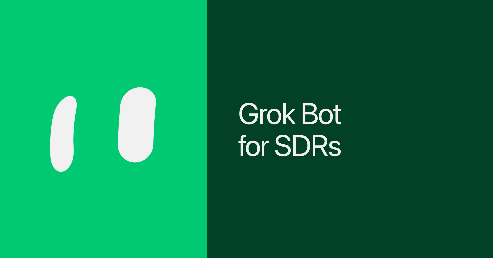

Official guides · 17/27
Grok Bot for SDRs
How I run SDR outbound with Cursor and Grok Bot (xAI's AI assistant that comes with its own computer): research packets, CLEAR vs FLAG intake, and bots that stage work I still send.

I'm an SDR at SpaceXSI. Most of my day used to disappear into outbound work: research the account, find the right people, write the first touch, put everyone into the right sequence, send LinkedIn requests, and follow up with people who had already asked for a demo.
None of those jobs are hard to do at once. The hard part is doing all of them, for every account, every morning, before anyone books a call.
I run that process across Cursor and Grok Bot now.
Cursor builds the research packet and writes the first-touch copy. Grok Bot takes that work into Nooks and LinkedIn, checks what is already happening across my sales tools, and keeps working when my laptop is closed.
My old workflow lived across six tabs.
Hex showed me the product footprint. Salesforce and Gong held the account history. Amplemarket helped with email. Nooks handled sequences. LinkedIn handled connection requests.
By the time I finished the research, half the morning was gone. I still had to write, create records, and stage everything.
Now I start the day with work to review.
The five-step SDR process
Research: Cursor cloud agents use Hex, Salesforce, and Gong to build the account story. That includes product usage, closed-lost opportunities, and past conversations.
Prospect: We find people whose roles match that story. Warm contacts and reconnects come first. We only go cold to director-level prospects when their actual responsibilities fit.
Draft: Cursor uses a set of writing and research skills to draft first touches in my voice. The emails start with a real account signal, not a generic template.
Intake: Prospects can come from a pipeline-generation list, the Cursor morning packet, or the ChatGTM inbox. Grok Bot checks whether each person is already active in Nooks, paused in Amplemarket, or attached to a Stage 0 opportunity. CLEAR contacts can be enrolled unsent. FLAGS wait for me.
Finalize: I KEEP and send from Nooks. Blank LinkedIn requests go out separately. Nothing auto-sends.
Cursor produces the research and copy. Grok Bot handles the operational work that comes next.
One job per bot
I don't use one general bot for everything. Each bot has one job.
Josh Allen, my Chief of Staff, owns the morning process. He prepares the next pipeline-generation list, puts the final emails in front of me, tracks demo-request follow-ups, and fixes contacts assigned to the wrong sequence. His morning update tells me what changed and what needs my attention.
Contact Man owns the prospecting sheet. It maintains the keeper list, records everyone added to a sequence, and tracks which rows are staged. When Josh enrolls someone, Contact Man updates the sheet so we do not work the same person twice.
John Ford owns LinkedIn requests. It sends them without a note and checks both the daily cap and the number of pending requests first.
SFDC Create and Sequencer handle contact creation and sequence changes when the normal CRM path gets messy.
Add SFDC Create and Sequencer to Grok Bot.
The bots work together without sending every step back through me. Josh can ask Contact Man to update the sheet and John Ford to handle LinkedIn during the same batch. I only see the result and anything that needs a decision.
A morning with Grok Bot
Here's a recent example of my morning routine as an SDR with Grok Bot.
Cursor finished a research packet and a batch of drafts before I started the day. Josh then checked each contact against Nooks, Amplemarket, and Salesforce.
Every contact landed in one of two buckets:
CLEAR: Safe to draft and enroll without sending.
FLAG: Something is unclear and I need to decide what to do.
For each CLEAR contact, Josh took the Cursor draft, checked it against the writing rules, and enrolled it unsent. Six people were already active elsewhere, so the bots left them alone. Thirty-four had edge cases and went into my FLAG review. One was fully clear, so I reviewed and sent it. John Ford handled the blank LinkedIn request.
The same process decides who we prospect. It compares product seats with the size of the software-engineering organization. When the footprint is strong enough, we target directors and above from the Golden List. Otherwise, we work manager and above.
CLEAR contacts keep moving. FLAGS stop.
I only spent my time on the edge cases, like a paused contact in Amplemarket, an early opportunity in Salesforce, or two nearly identical emails. I don't spend it copying clean data between tools.
The bots also fix the backlog I would normally put off. At one point, 24 contacts had emails in the wrong sequence. Josh finished the existing sequence steps, moved the engineering titles into either an email-only and call-only setup, and scheduled the first calls for the following afternoon.
I still owned the drafts and final approval. But all 24 contacts were cleaned up in one pass, and the follow-up work did not get lost.
Rules that keep the team healthy
Never auto-send. The bots can research, draft, create records, and stage work. I review and send.
Warm history beats a cold template. If Gong shows a real previous conversation, the email starts there.
Footprint beats title. Hex usage determines when an account has earned director-level outreach. A senior title by itself is not enough.
LinkedIn requests stay blank. If the bot cannot verify the profile URL, it flags the contact instead of guessing.
Repeated feedback becomes a rule. My writing style, research process, sequence logic, and email format live in reusable skills across Cursor and Grok Bot. If the same problem happens twice, I update the instructions.
SDR work is a long list of small jobs that all need to get finished before you can make a real impact.
Research the account. Build the prospect list. Draft the first touch. Create the contact. Enroll the sequence. Send the LinkedIn request. Follow up on the demo request.
Each job seems simple until you need to do all of them for 20 accounts before lunch.
Cursor handles the research and writing. Grok Bot checks systems, creates records, enrolls contacts, updates the sheet, and handles the browser work between them.
Neither one replaces the decisions that matter. I still decide whether to keep a flagged prospect, how to reconnect when there is real Gong history, and whether two similar contacts are actually duplicates.
I still sell. Cursor and my Grok Bots handle the build so I can spend more time where it matters most.
If you're an SDR, connect the tools you already use, put the research and drafts in Cursor, give one bot ownership of the morning process, and keep the final send for yourself.
Let it run overnight. Start the morning with a review list instead of an empty chat.
To get started, add GTM Account Researcher to Grok Bot.
Written by Stefan Markarian